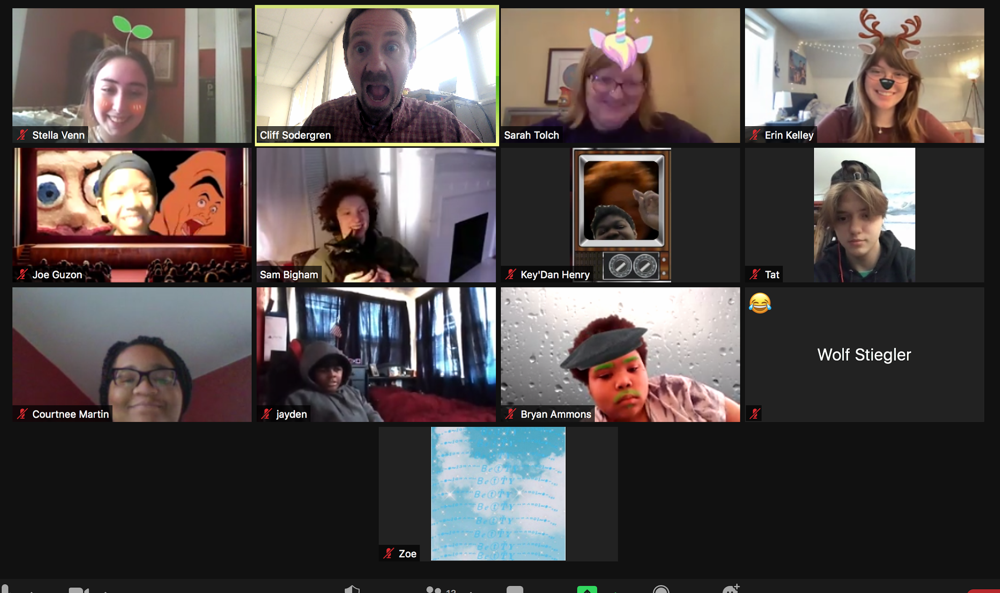

About Us
The Servo Stressors are a robotics team from St. Louis, Missouri. Based at Crossroads College Preparatory School, our team includes members in grades seven through twelve. The Servo Stressors were started in 2017 at the request of Crossroads students. Every year, we compete in the First Tech Challenge. We call ourselves the Servo Stressors because we tend to rely on and overuse our servos.
Because of the COVID-19 pandemic, this season has been very different from previous years. The Servo Stressors never met in person as a full team this year. All communication took place over zoom and our meeting time was significantly less than in previous years. The inability to meet in person has presented many challenges, particularly relating to the robot's actual building and designing. Because of in-person restraints, we decided to repurpose most of last year's robot design and make adaptations for this year's challenge. Another challenge we faced was how to program a robot we could not physically access. Our programming team adapted by learning how to use a virtual robot simulator and share code through GitHub.
Even though this year presented a multitude of challenges and changes, the Servo Stressors are proud to have produced a working robot for competition.